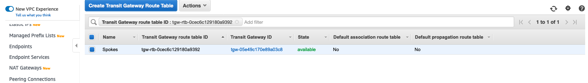

03-使用TGW创建互联环境
请确保操作的区域是 AWS新加坡区域（ap-southeast-1）。
创建Transit Gateway
点击VPC窗口的Transit Gateway按钮，点击Create Transit Gateway
输入Name tag和Description
点击创建TGW，
创建Transit Gateway 附件
点击VPC窗口的Transit Gateway Attachments按钮，点击Create Transit Gateway Attachments按钮
在Transit Gateway ID那栏选中之前步骤创建的TGW
Attachment type选择VPC
在VPC Attachment部分，输入Attachment name tag
VPC ID选择之前创建的VPC Spoke-1
在Subnet IDs部分勾选全部2个Subnets
再点击创建，可以看到console上已经显示一个名为VPC Spoke-1的VPC attachment
重复上述步骤，继续创建Attachment VPC Spoke-2和VPC Hub：
点击Create Transit Gateway Attachments按钮
在Transit Gateway ID那栏选中之前创建的TGW
Attachment type选择VPC
在VPC Attachment部分，输入Attachment name tag
VPC ID选择之前创建的VPC Spoke-2
在Subnet IDs部分勾选全部2个Subnets
再点击创建，可以看到console上已经显示一个名为的VPC Spoke-2的VPC attachment

点击Create Transit Gateway Attachments按钮
在Transit Gateway ID那栏选中之前创建的TGW
Attachment type选择VPC
在VPC Attachment部分
输入Attachment name tag
VPC ID选择之前创建的VPC Hub
在Subnet IDs部分勾选全部2个Subnets
再点击创建，可以看到console上已经显示一个名为的VPC Hub的VPC attachment
创建和配置Transit Gateway 路由表
点击Console里的Transit Gateway Route Tables，选中默认Route Table，选择Associations，依次选中不同的Attachment
点击Delete association删除所有关联
然后点击Create Transit Gateway Route Table按钮创建一个新的路由表
输入Name tag为Spokes，选择Transit Gateway ID为之前创建的TGW
点击创建好的新路由表
选中建立好的Spokes路由表，选择Create association按钮
在Create association console中，choose attachment to associate栏选择VPC Spoke-1
点击Create association 创建association
重复上述步骤，将VPC Spoke-2也associate到Spokes路由表中，选中建立好的Spokes路由表，选择Create association按钮
在Create association console中，choose attachment to associate栏选择VPC Spoke-2
点击Create association 创建association
创建Hub路由表，点击Create Transit Gateway Route Table按钮创建一个新的路由表 
输入Name tag为Hub，选择Transit Gateway ID为之前创建的TGW
点击创建好的新路由表
将VPC Hub associate到Hub路由表中，选中建立好的Hub路由表，选择Create association按钮
在Create association console中，choose attachment to associate栏选择VPC Hub
点击Create association 创建association
配置路由传播
点击Transit Gateway Route Tables console，选中Spokes路由表，选择Propagations，点击Create Propagations
在Choose attachment to prpagate栏中选择VPC Hub

点击创建
再次点击Transit Gateway Route Tables console，选中Hub路由表，选择Propagations，点击Create Propagations
在Choose attachment to prpagate栏中选择VPC Spoke-1，
点击创建
重复上述步骤，将Spoke-2的路由也propagate到Hub路由表中
再次点击Transit Gateway Route Tables console，选中Hub路由表，选择Propagations，点击Create Propagations
在Choose attachment to prpagate栏中选择VPC Spoke-2
点击创建
配置各子网路由表
在VPC console中选择Route Tables，选中之前创建的路由表Spoke1，选择Routes，选择Edit routes
点击Add route，添加一条路由，Destination栏填写10.0.0.0/8（此处注意：创建VPC时，我们最大的CIDR是16位的，但是创建路由时是可以指定8位的），Target栏选择Transit Gateway
选中所创建的TGW
点击Save routes
在VPC console中选择Route Tables，选中之前创建的路由表Spoke2，选择Routes，选择Edit routes
点击Add route，添加一条路由，Destination栏填写10.0.0.0/8，Target栏选择Transit Gateway
选中之前所创建的TGW
点击Save routes
在VPC console中选择Route Tables，选中之前创建的路由表Hub，选择Routes，选择Edit routes
点击Add route，添加一条路由，Destination栏填写10.0.0.0/8，Target栏选择Transit Gateway
选中之前所创建的TGW
点击Save routes
验证测试
远程登录EC2实例Spoke1-sub-1a，PingEC2实例Spoke2-sub-1a
Ping不通，证明两个Spoke VPC内的EC2实例不能互访
远程登录EC2实例Spoke1-sub-1a，PingEC2实例Hub-sub- 1a
可以Ping通，证明Spoke1 VPC内的EC2实例可以和Hub VPC的EC2实例互访
远程登录EC2实例Spoke2-sub-1a，PingEC2实例Hub-sub- 1a
可以Ping通，证明Spoke1 VPC内的EC2实例可以和Hub VPC的EC2实例互访。
~完~